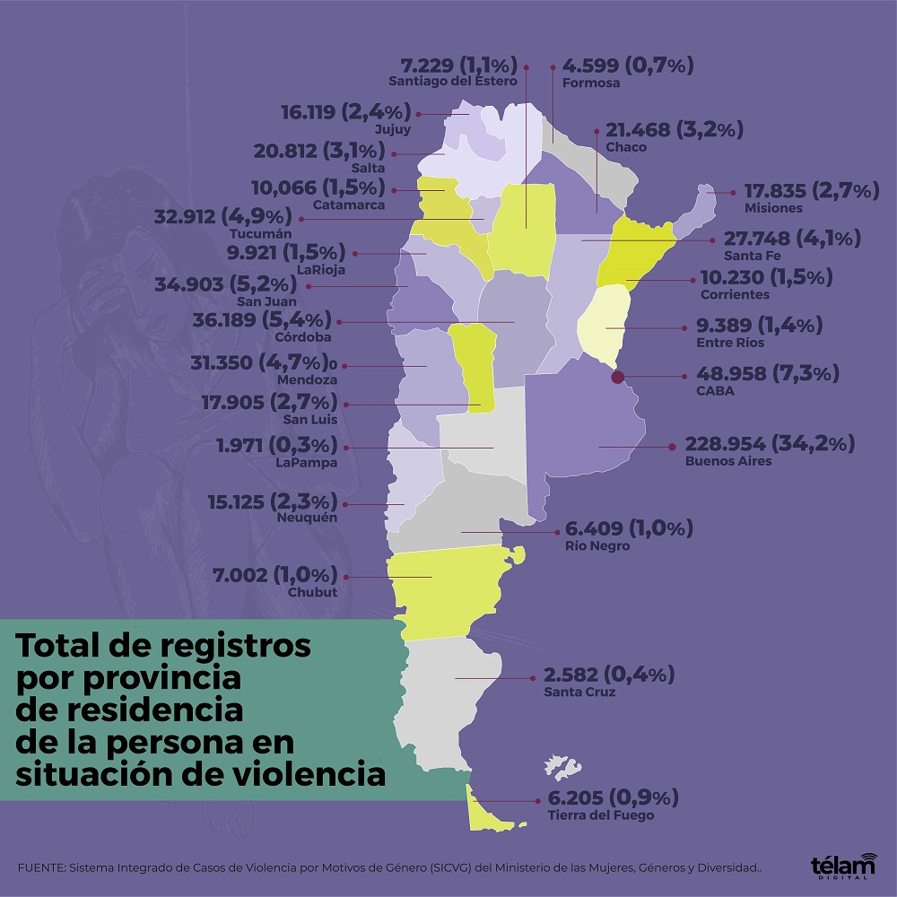

Provincias donde hubo mas casos
No solamente surge en la provincia de Salta.
Este fenomeno se produce en todo el pais llevando
a un gran problema que nos tardaria en darnos cuenta,
en como esto puede modificar la sociedad que conocemos.
MAPA de Contexto exterior
Las mas afectadas tienen mayores porcentajes de
situaciones criticas de agresiones tanto para hombres como mujeres, mientras que pocas no tienen un porcentaje alto por esta situacion.
- Buenos Aires
- CABA
- Cordoba
- San Juan
- Tucuman
- Mendoza
- Santa Fe
- Chaco
- Salta
- San Luis

Seccion de Noticias
noticia 1: 43 victimas de violencia de genero
noticia 2: caso de violencia
noticia 3: violencia de relacion de pareja
noticia 4: investigacion sobre clinica clandestina
noticia 5: incidentes en una manifestacion publica
noticia 6: debates sobre politicas de genero 2026
noticia 7: defender sin saber las consecuencias esperadas
volver al inicio